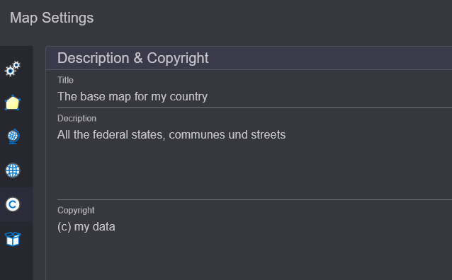

Creating a New Map¶
Initially, a new map can optionally be created. This can be done via the New Map button or the quick start button in the TOC area:

In the dialog, a name for the new map can be assigned. By clicking Confirm,
the new map is created. The new name now appears instead of map1 in the TOC area.
Map Settings¶
Further settings can be made via the Map Settings button.
The recently chosen name of the map can also be changed here later:

In the Display section, a reference scale can be set. If this value is greater than
0, symbol and font sizes are based on this scale. Depending on the map scale,
the symbols and labels will appear larger or smaller.
For most applications, Map/Display Units should be set to Meters.
Without Map Units, the reference scale cannot be considered.
In the Current section, the coordinates of the current map view are displayed, based on
the currently set coordinate system. The size of the map image is also shown.
This information is often helpful when testing services on the gView.Server.
Links im Dialog werden noch weiter Einstellungsseiten angeboten:
Additional setting pages are offered on the left side of the dialog:
Appearance¶
This page can be used to determine the smoothing mode for symbols and labels. Clicking on one of these buttons applies the selected mode to all layers currently inserted in the map:

Spatial Reference (System)¶
Here, the spatial reference system for the map can be assigned. The coordinate system in which
the data is predominantly stored should be set. To change the coordinate system, click on Select.
In the dialog, enter the name or EPSG code of the desired coordinate system in the search field
and then click on the desired item in the list. This will adopt the coordinate system:

Note
The coordinate system in which data is displayed in gView.Carto always corresponds to that of the transparent background TileCache. Therefore, a change here will not be immediately apparent in the display.
However, the coordinates displayed in the status bar will change. This setting is also relevant when the map is later published on the gView.Server. All coordinates and BoundingBox values in the service properties refer to the coordinate system set here.
Another point in this dialog is Spatial Behavior.
This setting determines how the service should behave later when it is accessed in the
WebMercator system. Typically, the scale is calculated without considering distortion.
No matter where you are on the map, the calculated scale corresponds to the scale at the equator.
Since the north/south distortion in the WebMercator can be significant,
this is not always desirable. If you set Include Latitude When Calculating Map Scale instead
of default, the geographic latitude is considered when calculating the internal scale
(factor cos(lat)).
Default Layer Spatial Reference (SRef)¶
When adding data to the map later, it may happen that some layers lack information
about the coordinate system the data are in. This should not be the norm, but
if this problem occurs, a Default Coordinate System can be set here.
For all layers without specified coordinates, this will be used:
Note
This setting should only be necessary in exceptional cases. Normally, it is important that all layers have information about their coordinate system.
Description & Copyright¶
Under this section, a descriptive title for the map as well as a description and copyright notices can be specified. These will later appear as metadata in the gView.Server services:
Resources¶
Here, binary objects can be passed to the map. These will later be stored within the map document. No large files should be stored here, as this would make the map document very large.
One use case is small PNG graphics that will later be used as symbols (RasterSymbol for points). The symbols can also be set as a path to the image. However, the disadvantage is that the same path must also be available on the server where gView.Server is running. If the image is specified here, it can later be referred to in RasterMarkerSymbol. If the symbol is stored in the map document, identical paths are not necessary.
Note
Another way to display symbols is through True Type Fonts (recommended method). These cannot be uploaded and used here. The fonts must also be installed on the gView.Server server.